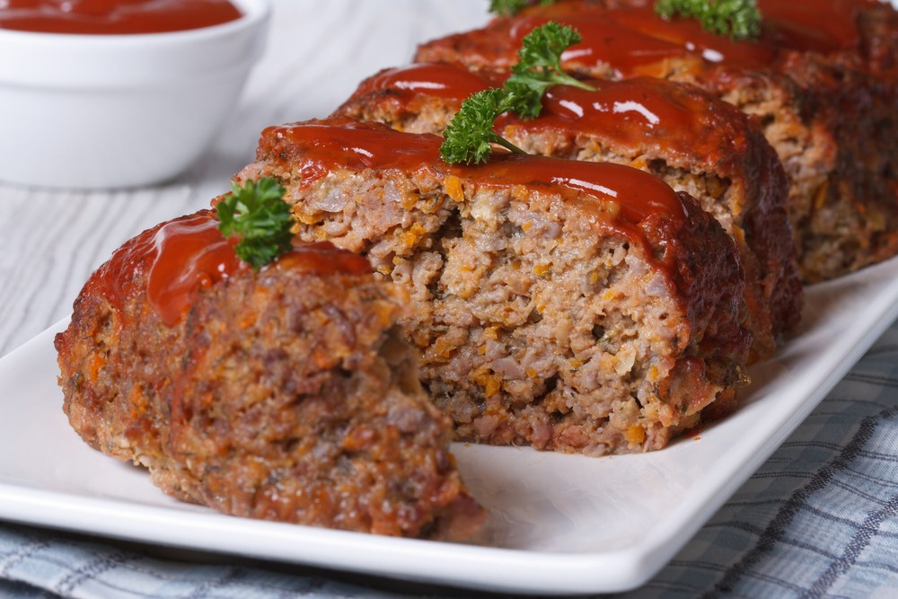

Meatloaf is ground meat made with other ingredients, formed into a loaf shape then cooked. There is two ways to form the loaf shape, the ways are either using a loaf pan of shaped by hand.
Ingredients
For Meatloaf
- 1 cup of milk
- 6 bread slices
- 2 pounds of ground beef
- 1 cup of grated Parmesan
- 1 teaspoon of salt
- Freshly ground black pepper
- 1/4 teaspoon seasoned salt, such as Lawry's
- 1/4 to 1/2 cup minced flat-leaf parsley
- 4 eggs, beaten
- 8 to 12 thin bacon slices
Tomato Sauce
- 1/2 cup ketchup
- 6 tablespoons brown sugar
- 1 teaspoon dry mustard
- Dash or 2 hot sauce (more if you like)
- Dash or 2 Worcestershire sauce
Directions
- For the meatloaf: Preheat the oven to 350 degrees F.
- Pour the milk over the bread and allow it to soak in for several minutes. Place the ground beef, milk-soaked bread, Parmesan, salt, some pepper, seasoned salt and parsley in a large mixing bowl. Pour in the eggs. With clean hands, mix the ingredients until well combined.
- Form the mixture into a loaf shape on a foil-lined broiler pan, which will allow the fat from the meat to drain.
- Lay the bacon slices over the top, tucking them underneath the meatloaf to give the meatloaf some support.
- Next, make the tomato sauce: Pour the ketchup into a bowl. Add the brown sugar and dry mustard, and splash in the hot sauce and Worcestershire sauce. Stir the mixture until well combined. Pour one-third of the sauce over the top of the meatloaf.
- Bake for 45 minutes, and then pour over another one-third of the remaining tomato sauce over the meatloaf. Bake for an additional 20 to 25 minutes; the meatloaf should be no longer pink in the middle. Allow to sit 10 minutes before serving.
- Serve with the remaining tomato sauce on the side as a dipping sauce.
| Calories |
220 |
Sodium |
| Saturated |
4g |
Total Carbs |
| Polyunsaturated |
0g |
Dietary Fiber |
| Monounsaturated |
6g |
Sugars |
| Trans |
0g |
Protein |